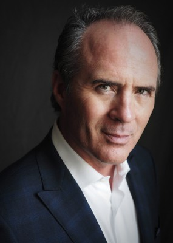
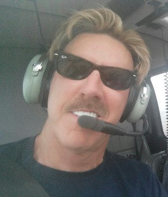
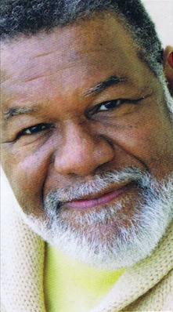
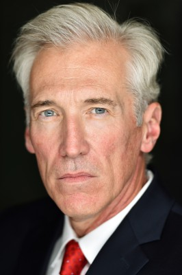

#1417 Need for Speed
 gesehen am 10.09.2015
gesehen am 10.09.2015


 IMDB-Wertung: 6.5 / 10
IMDB-Wertung: 6.5 / 10  Metascore: 39
Metascore: 39 
Der Mechaniker Tobey Marshall hat Schwierigkeiten, seine Autowerkstatt über Wasser zu halten und beschließt deshalb, sich mit dem ehemaligen NASCAR-Fahrer Dino Brewster zusammen zu tun. Als Tobey kurz davor steht, einen Wagen an Julia Bonet zu verkaufen, um so die Werkstatt zu retten, hängt ihm Dino eine Straftat an, die er nicht begangen hat – woraufhin er für zwei Jahre ins Gefängnis muss. Nach seiner Entlassung ist Tobey auf Rache aus! Er beschließt, Dino im größten Underground-Rennen der Welt zu besiegen: dem De Leon. Doch das Rennen findet am anderen Ende der USA statt. Um rechtzeitig an der Startlinie zu sein, drückt Tobey schon vorher aufs Gaspedal �� die Polizei immer dicht hinter ihm. Und zu allem Überfluss hat Dino ein Kopfgeld in Höhe von sechs Millionen Dollar auf Tobeys Auto ausgesetzt...
Jahr: 2014
Dauer: 132 Minuten
FSK: 12
Land: USA Studio: Walt Disney Studios Motion PicturesTonspuren: DTS - ,
Untertitel: Englisch,
Auflösung: 1080p (1920x808) Größe: 7454 MB
Genre: Action, Thriller, Drama, Krimi
Regisseur: Scott Waugh
Drehbuch: George Gatins, George Gatins, John Gatins
Soundtrack: Nathan Furst
Darsteller:
 Aaron Paul als Tobey Marshall
Aaron Paul als Tobey Marshall Dominic Cooper als Dino Brewster
Dominic Cooper als Dino Brewster Imogen Poots als Julia Maddon
Imogen Poots als Julia Maddon- Scott Mescudi als Benny
 Rami Malek als Finn
Rami Malek als Finn Ramon Rodriguez als Joe Peck
Ramon Rodriguez als Joe Peck- Harrison Gilbertson als Little Pete
 Dakota Johnson als Anita
Dakota Johnson als Anita Michael Keaton als Monarch
Michael Keaton als Monarch- Logan Holladay als 'DJ' Joseph
- Carmela Zumbado als Jeny 'B'
- Nick Chinlund als Officer Lejeune
 Buddy Joe Hooker als Detroit Cop #1
Buddy Joe Hooker als Detroit Cop #1- Rich Rutherford als English Paul
- Brent Fletcher als Texas Mike
- Paul Dallenbach als Johnny V
 Kanin Howell als CHP #1
Kanin Howell als CHP #1-  Michael Rose als Investor
- Beth Waugh als Investor's Wife
 E. Roger Mitchell als Detective #1
E. Roger Mitchell als Detective #1 Antoni Corone als Detective #2
Antoni Corone als Detective #2 Frank Brennan als 60 Year Old Man
Frank Brennan als 60 Year Old Man- Tara Jones als News Anchor
 Han Soto als News Producer
Han Soto als News Producer Jill Jane Clements als Older Smaller Woman
Jill Jane Clements als Older Smaller Woman-  Rick Shuster als CHP Pilot
 John Gatins als Air Force Pilot
John Gatins als Air Force Pilot- Kerry Gatins als Teenage Waitress
- Adora Dei als Female EMT
-  Charles Black als Preacher
- Mike Massa als CHP #4
 John Meier als CHP #5
John Meier als CHP #5 Thomas Rosales Jr. als Valet
Thomas Rosales Jr. als Valet AnnaCorey als Alex Key Witness , uncredited
AnnaCorey als Alex Key Witness , uncredited Becky Boyd als Funeral Attendee , uncredited
Becky Boyd als Funeral Attendee , uncredited- Ricky Dew als Pedestrian , uncredited
 Dennis Doyle Jr. als Businessman , uncredited
Dennis Doyle Jr. als Businessman , uncredited John Fleischmann als Mustang Rollout Party Attendee , uncredited
John Fleischmann als Mustang Rollout Party Attendee , uncredited- Austin Freeman als Drive-In Fan , uncredited
-  Fred Galle als Car Buyer VIP , uncredited
- Marcus Goddard als Pedestrian , uncredited
- Grace Hartsfield als Cocktail Waitress , uncredited
- Mary Ellen Itson als Family Member at Funeral , uncredited
- James Jerome als Business Man / Pedestrian , uncredited
- Jessica McLarty als Race Fan , uncredited
- Rick Mischke als Hotel Patron , uncredited
- Scott Oakley als Discharging NY Prison Guard , uncredited
 Diezel Ramos als Onlooker , uncredited
Diezel Ramos als Onlooker , uncredited- Stevie Ray Dallimore als Bill Ingram
- Alan Pflueger als Flyin' Hawaiian
Datei: X:\2014(N-Z)\Need for Speed (2014, FSK12, 1920x808).mkv seit 01.07.2015
Festplatte: HD 2013(I-Z)-2014(A-Z)
 Es gibt insgesamt 163 Filme in der Gruppe '2014(N-Z)'
Es gibt insgesamt 163 Filme in der Gruppe '2014(N-Z)'